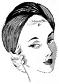
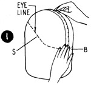
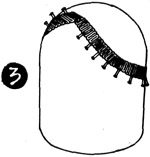
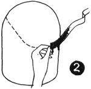
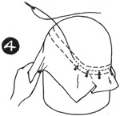
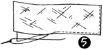
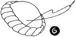

1952—How to Make Hats
by Ruby Carnahan
Turbans
TURBANS
A Draped Turban can be made of almost any material that will drape into soft,folds and is entirely dependent on the clever draping for style. To drape a professional looking Turban requires real skill to manipulate and design the material into a smart becoming hat. Gives the Designer an opportunity to express creative ability. To make a draped Turban you start from the headband, then the foundation and then the Turban is draped last. Material is draped and sewn to the foundation last.
MATERIAL REQUIRED
- 1 to 1 1/2 yards of material
- 1/2 yard of sized georgette
- 1/2 yard of crinoline
- 1 yard headband ribbon
- Utility headblock in the correct headsize
HOW TO MEASURE HEAD FOR FOUNDATION
Decide where turban is to be worn on head. (Illus. 1) Start a tape measure at that point and measure over the top of head to hollow at back of head. Measure desired depth of turban on head from side to side. Mark back to front measurement and side to side measurement on block. Also mark eye line measurement on block. (Eye line is any indentation around face line of turban.) To measure eye line, start tape measure at top center of head and measure to where indentation is desired and mark this measurement on block. Draw line around block to mark these measurements.
HEADBAND
Use No. 5 grosgrain sawtooth ribbon. Wet ribbon and squeeze dry (Illus. 2). Start ribbon in back of block with bottom edge of ribbon on the line. Pull and stretch ribbon and pin around block, turning ribbon over at eye line (Illus. 3) and continuing around block until ribbon meets in back. Turn ribbon under at back.
FOUNDATION
Place sized georgette over block on the bias (Illus. 4). (Run bias from back to front.) Steam, pull down and pin georgette to ribbon headband. Sew to center of headband all the way around. Cut off excess georgette just below sewing on headband. Repeat same process with a layer of crinoline over georgette. Steam, block and pin crinoline to headband and sew. Cut off excess crinoline and let foundation dry on block.
Cut a square 14" x 15" of material used to cover turban. Pin and block over foundation in the same manner used to make foundation, sewing to headband and cutting off excess material.
DRAPING TURBAN
(Illus. 5) Cut a bias piece of material used to cover turban 12" x 36" for drape and baste to a bias piece of georgette. Then use your own idea pinning and draping bias material until desired effect is accomplished. Tuck ends of drape under folds to finish and tack on foundation. Steam each fold and slip stitch drape around bottom of drape to headband.
(Illus. 6) If a rolled edge around turban is desired, use a piece of paper rope inside bias strip and wrap bias material around paper rope, crushing material as you twist it around. Taper off ends of paper rope and tack to foundation, then tack roll to foundation. Two colors used to drape turban roll is very effective. Cut two bias strips of material and wrap around roll alternating colors.
Turban does not need another lining or headband.